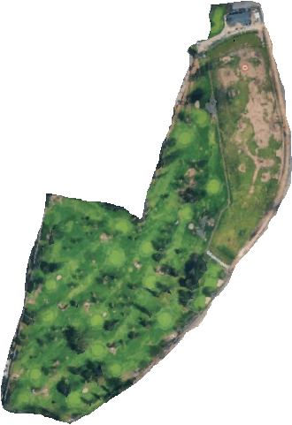

Age 7
Santa Anita
My coach introduced me to Santa Anita, where we putted — and then putted some more. Those early green sessions taught me touch, patience, and how much there is to learn before a full swing.
Putting practice
Four years ago, I started chasing a better swing. What I found was a slower, stranger, better kind of progress — measured in saved pars, new places, and one more shot after a bad one.
My journey began when my mom saw one of my friends playing golf. She got inspired and signed me up with golf coaches, where I built my progress through practice drills and warm-ups.
My coach introduced me to Santa Anita, where we putted — and then putted some more. Those early green sessions taught me touch, patience, and how much there is to learn before a full swing.
At Rancho Duarte, I started setting goals and chasing milestones, including my first-ever birdie and making a par on a par 4.
My coaches kept me moving with drills, warm-ups, and focused practice. We usually played for about two hours, learning how to stay patient and keep improving.
Now I play and practice for about 1½ hours. The time may be shorter, but every session still has a goal — and there is always another shot to learn from.
A little gallery of the fairways, greens, and in-between moments that made the last four years feel like a real journey.
Where the journey began: approachable holes, quick feedback, and enough room to fall in love with the feeling of a clean strike.
The course that taught me a round can feel generous and difficult in the same breath — especially when the wind starts talking.
More course, more decisions. Brea Creek turned every approach into a chance to be a little braver.
A course with a little more room to think. The best shots here were usually the ones I stopped trying to force.
The most recent marker in the story — a reminder that improvement is less a finish line than a reason to keep showing up.
A new page in the notebook — another place to test the swing, read the land, and keep building a round one shot at a time.
These panels are rebuilt from public scorecard data: hole count, par, and tee yardages. Use the links to open the original scorecard or course reference.
| Hole | 1 | 2 | 3 | 4 | 5 | 6 | 7 | 8 | 9 |
|---|---|---|---|---|---|---|---|---|---|
| Par | 3 | 3 | 3 | 3 | 3 | 3 | 3 | 3 | 3 |
| Yds | 93 | 101 | 153 | 102 | 95 | 82 | 97 | 111 | 93 |
| Hole | 1 | 2 | 3 | 4 | 5 | 6 | 7 | 8 | 9 |
|---|---|---|---|---|---|---|---|---|---|
| Par | 4 | 5 | 3 | 4 | 4 | 5 | 4 | 4 | 3 |
| Yds | 355 | 517 | 197 | 412 | 368 | 551 | 359 | 379 | 170 |
| Hole | 1 | 2 | 3 | 4 | 5 | 6 | 7 | 8 | 9 |
|---|---|---|---|---|---|---|---|---|---|
| Par | 3 | 3 | 4 | 3 | 4 | 3 | 3 | 3 | 3 |
| Yds | 125 | 163 | 325 | 150 | 335 | 181 | 141 | 130 | 129 |
| Hole | 1 | 2 | 3 | 4 | 5 | 6 | 7 | 8 | 9 |
|---|---|---|---|---|---|---|---|---|---|
| Par | 4 | 4 | 5 | 3 | 4 | 5 | 4 | 3 | 5 |
| Yds | 371 | 364 | 554 | 134 | 375 | 411 | 404 | 193 | 481 |
| Hole | 1 | 2 | 3 | 4 | 5 | 6 | 7 | 8 | 9 |
|---|---|---|---|---|---|---|---|---|---|
| Par | 4 | 4 | 3 | 5 | 4 | 3 | 5 | 4 | 4 |
| Yds | 429 | 379 | 175 | 546 | 452 | 139 | 530 | 392 | 339 |
| Reference | Blue | White |
|---|---|---|
| Course par | 62 | 62 |
| Rating | 54.4 | 53.4 |
| Slope | 74 | 71 |
Layout data is based on publicly available scorecard references, not a satellite survey. Yardages can change by tee, season, or course updates; always check the current card before playing. Diamond Bar official scorecard · Brea Creek course site
The people who make the round more fun, the misses easier to laugh about, and the next tee worth getting to.
A quick snapshot of the person behind the scorecards, practice drills, and four-year golf journey.
The best part of golf is that there is always another shot to learn from.

Scorecard-derived plan with approximate facility markers. Use the club’s current signage or map for exact locations.